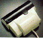
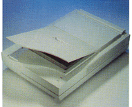
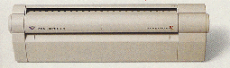

 |
 |
 |
| ruèni | položeni | prolazni |
Namenjeni su digitalizovanju slike. Korišæenje skenera pre svega postavlja problematiku manipulisanja velikim fajlovima koje generišu (desetine a i preko 100MB).
Može da skenira ravnu površinu širine 10.2 cm i to crno belo, sivu skalu i color. Rezolucija ide do 800x800 tpi. Namena im je skeniranje manjih slièica, logotipa i sl. U poslednje vreme pojavili su se i ruèni skeneri koji skeniraju u koloru.
Obièno su LEGAL formata (8" x 14") i uglavnom mogu da skeniraju u punom koloru. Rezolucija ide od 600 x 600 dpi, 1200 x 1,200 dpi i više. Skenirana stranica A4 (600x600 dpi) u punom koloru zauzima oko 100MB na Hard disku.
Vrlo èesto se položeni skener koristi samo za skeniranje dokumenta. Iz te potrebe nastao je i "prolazni skener".
Film skener
Skenira film materijale 35mm formata. Obièni kolor, crno-beli ili slajd film. Rezolucija je na 36 mm dužine filma 4000 linija odnosno samog skenera max 2 700 lpi. Kvalitet skeniranog slajda na 2 700 lpi odgovara skeniranoj fotografiji, pomoæu flatbed skenera, velièine 16 x 24 cm.